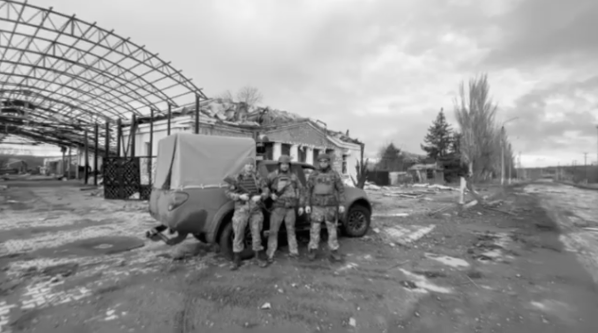

Благодійний фонд «Сенсум»
Три роки системної допомоги військовим підрозділам, партнерських зборів, звітів і соціально-спортивних ініціатив.
Підсумок за три роки
01 — Про фонд
Окремий благодійний напрямок Sensum Law Firm.
БФ «Сенсум» виріс із постійної допомоги армії після лютого 2022 року. Фонд працює як системний майданчик для зборів, передач і прозорої звітності перед людьми, які підтримують військових.
У фокусі фонду: автомобілі, РЕБ, дрони, оптика, зв'язок, енергозабезпечення, базові потреби підрозділів, а також соціально-спортивні проєкти для майбутнього повернення ветеранів до повноцінного життя.
Маленьких донатів не буває, як і не буває маленьких звітів.
02 — Хронологія
Підтверджені події без службових заглушок.
Події з фото показані як картки. Події без підтверджених фото лишаються текстовими записами. Записи з невідомим отримувачем або службовим текстом не виносяться у публічну стрічку до уточнення.
03 — Засновники фонду
Дев'ять людей, які зібрали допомогу в систему.
У публічній версії не додаємо непідтверджені імена. Блок уже закладений під повну команду засновників: коли будуть узгоджені імена та фото всіх дев'яти, він розкриється як окремий профільний розділ.
04 — Поточний збір
Місце під QR-код і прямі канали фонду.
Цей блок готовий для актуального QR-коду збору. Поруч лишаємо постійні посилання на Facebook, Instagram і банку.
Поточний збір